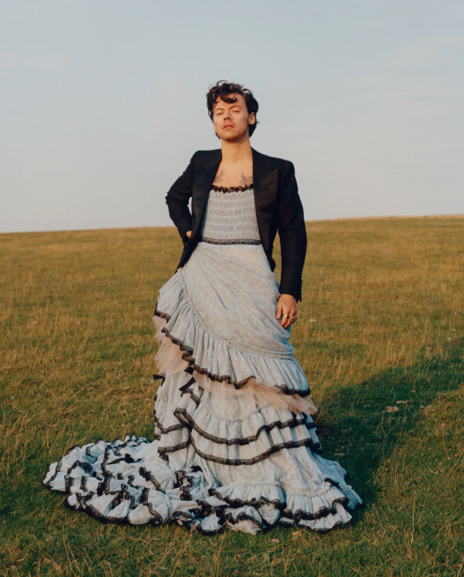

Learn more about Style's life and read this bio .
On Style's storefront you can shop Style's merch, listen to his music, and learn about any upcoming tours
Visit Style's storefrontHarry Styles used to be in the boyband, "One Direction". The Group was formed out of the television competition show, "X Factor"
Harry Styles has three solo albums, The first one is self titled, the second is "Fine Line" and the third is "Harry's House". My favorite Harry Style's song is "Sweet Creature" off of his first solo album. In this video, you can watch Style's preform an acoustic set.
Harry Styles preformed at Coachella in 2022. He preformed a lively set featuring Lizzo and Shania Twain.
Harry Style's is also known for his eccentric fashion statements. He recently was featured on the cover of Vougue magazine.
